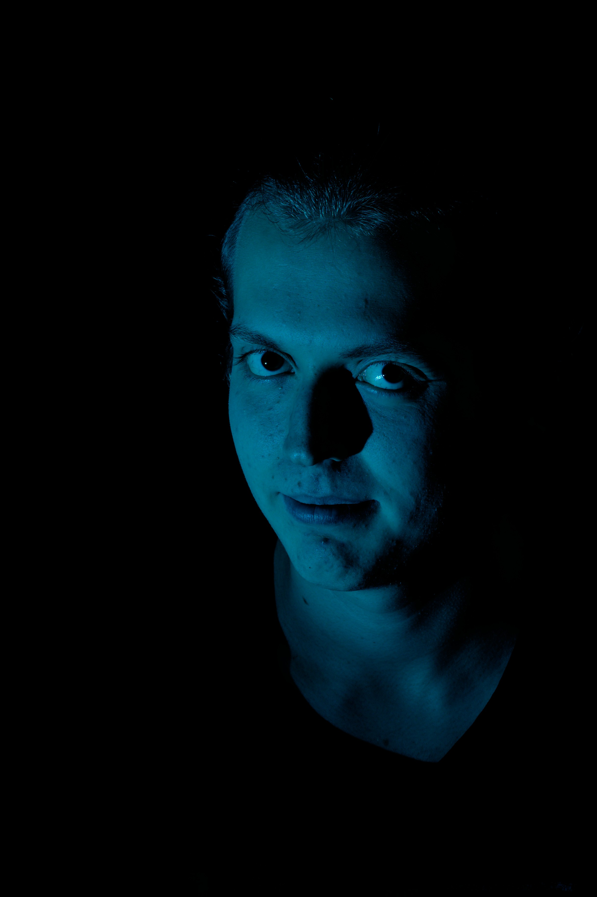

Über mich
Ich bin Natan,
20 Jahre alt und interessiere mich für Filmen,
Fotografie und Konzeption.

Ich habe 2019 Abitur gemacht.
Danach machte ich ein BFD in einer Kurklinik auf
Borkum.
Mein erstes Studium dauerte nur zwei Semester.
Es folgte ein Praktikum und danach war klar: Ich möchte Filme
machen!
Seit dem SS22 studiere ich Medienkonzeption an der HFU in
Furtwangen.